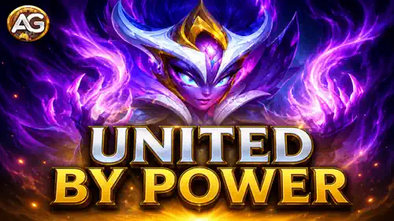

Lords of the Elements KI 3, also presented as United by Power, runs from Thursday through Sunday. Its eight chains cover logins, Hydra activity, Event Shop Coins, Heroic Chests, Talisman rerolls, Expeditions, and quest completions from KI 1 and KI 2.
The strongest Guild Versus overlaps are Heroic Chests on Thursday and Expeditions on Friday. KI 3 also returns Rune Stones, Titan Skin Stones, Titan Potions, and Mastery Crystals for Thursday and Saturday conversion. Sunday is unavailable for Guild Versus scoring.

After comparing KI 3 with the weekly Guild Versus rotation, these are Alexandre's recommended days for combining objectives and maximizing the return on each resource. Sunday does not award Guild Versus points, so use it only to finish KI 3.
| Best Day | KI 3 Action or Reward | Matching Guild Versus Task | Guild Versus Rate | Potential |
|---|---|---|---|---|
| Thursday | Open up to 100 Heroic Chests | Open a Heroic Chest | 1 = 4,000 points | 400,000 points |
| Friday | Begin up to 27 Expeditions | Start an Expedition | 1 = 5,000 points | 135,000 points |
| Thursday (reward use) | Spend claimed KI 3 Rune Stone rewards | Spend Rune Stones | 20 = 100 points | 240,500 points |
| Thursday (reward use) | Spend the 100 rewarded Rune Spheres | Spend Rune Spheres | 100 = 50,000 points | 50,000 points |
| Thursday (reward use) | Spend claimed KI 3 Titan Skin Stones | Spend Titan Skin Stones | 15 = 100 points | 512,600 points |
| Friday (conditional) | Complete and equip Zorval's Wing with rewarded fragments | Equip the completed Zorval's Wing as a Red item | 1 = 1,250,000 points | 1,250,000 per item |
| Saturday (reward use) | Use up to 23,500 rewarded Titan Potions | Use Titan Potions | 100 = 150 points | 35,250 points |
| Saturday (reward use) | Spend up to 3,300 rewarded Mastery Crystals | Spend Mastery Crystals | 15 = 200 points | 44,000 points |
Thursday conversion totals are theoretical full-event inventories; many KI 1/KI 2 completion rewards may arrive after Thursday. Use only what has already been claimed. The 135,000 Expedition potential assumes all 27 starts could occur Friday; normal daily availability is lower, so do not risk the event milestone by delaying every Expedition.
Wait until all three KI events and Guild Versus are live. Progress efficient KI 1/KI 2 steps, spend Event Shop Coins to unlock early Trade Route rewards, and open planned Heroic Chests for 4,000 points each. Convert only useful Rune Stones, Rune Spheres, and Titan Skin Stones already claimed before Thursday's scoring window ends.
Begin all normally available Expeditions after Friday's Guild Versus task appears. Each start adds 5,000 points. Complete remaining starts across the other days if Friday alone cannot safely reach 27. Equip Zorval's Wing on Friday only if the collected fragments create a complete Red item.
Use the Titan Potions and Mastery Crystals earned from KI 3 after Saturday's tasks activate. A complete listed reward set can add 79,250 Guild Versus points from these two resources in whole batches. Keep Sunday available for event-only cleanup.
Guild Versus is unavailable Sunday. Complete the fourth login, remaining Hydra actions, Talisman rerolls, Expeditions, and KI 1/KI 2 meta-chain steps. Claim all desired rewards before the event ends, but do not save a scoring action for Sunday.
Taming Hydra accepts either a Hydra battle or one Horn of Summoning given to the Fairies. A Golden Horn of Summoning costs 15,000 Titan Potions in the Titan Soul Shop.
The Golden Horn points are part of your Titan Potion spending, not an additional score on top of the same Potions.
Alexandre's advice: Do not assume that a Hydra battle completes the Guild Versus “Defeat Boss” task unless the game actually credits the points. When using a Golden Horn, plan around Saturday's confirmed Titan Potion overlap instead.
Log in once on Thursday, Friday, Saturday, and Sunday. This chain is free but cannot be recovered after a missed day.
| Logins | Rewards |
|---|---|
| 1 | 500 Titan Skin Stones; 300 Lords of the Elements Coins |
| 2 | 500 Titan Skin Stones; 300 Lords of the Elements Coins |
| 3 | 500 Titan Skin Stones; 300 Lords of the Elements Coins |
| 4 | 500 Titan Skin Stones; 300 Lords of the Elements Coins |
Battle any Hydra or give one Horn of Summoning to the Fairies for each step. Use ordinary daily Horns first; the Golden Horn route is designed for advanced Saturday Titan Potion conversion.
| Hydra Actions | Rewards |
|---|---|
| 1 | 100 Rune Stones; 100 Lords of the Elements Coins |
| 2 | 200 Titan Skin Stones; 200 Lords of the Elements Coins |
| 3 | 300 Rune Stones; 300 Lords of the Elements Coins |
| 5 | 500 Titan Skin Stones; 500 Lords of the Elements Coins |
| 7 | 500 Rune Stones; 700 Lords of the Elements Coins |
| 9 | 900 Lords of the Elements Coins; 15 Season Points |
| 12 | 1,200 Titan Skin Stones; 1,200 Lords of the Elements Coins |
Alexandre's corrections: The rewards at 2 and 5 actions should be 200 and 500 Coins to preserve the reward sequence.
This chain advances by spending Event Shop Coins. Alexandre recommends buying useful items early on Thursday to claim Titan Skin Stones during that day's scoring window, while saving Titan Potions for Saturday.
| Lords Coins Spent | Rewards |
|---|---|
| 1,500 | 400 Titan Potions |
| 3,500 | 400 Titan Skin Stones; 5 Artifact Essence Chests |
| 6,000 | 700 Titan Potions |
| 9,000 | 700 Titan Skin Stones; 5 Artifact Scroll Chests |
| 13,000 | 900 Titan Potions; 10 Season Points |
| 17,000 | 900 Titan Skin Stones; 5 Artifact Metal Chests |
| 22,000 | 1,500 Titan Potions |
| 30,000 | 1,500 Titan Skin Stones |
| 40,000 | 2,000 Titan Potions |
| 55,000 | 2,000 Titan Skin Stones; 15 Season Points |
| 70,000 | 3,000 Titan Potions |
| 90,000 | 3,000 Titan Skin Stones |
| 120,000 | 4,000 Titan Potions |
| 150,000 | 4,000 Titan Skin Stones |
| 190,000 | 5,000 Titan Potions; 30 Season Points |
| 240,000 | 5,000 Titan Skin Stones |
| 300,000 | 6,000 Titan Potions |
Best day: Thursday. Every Heroic Chest opened Thursday also awards 4,000 Guild Versus points. Use free and planned openings first; forcing 100 is a premium-scale goal.
| Heroic Chests | Rewards |
|---|---|
| 1 | 100 Rune Stones; 200 Lords of the Elements Coins |
| 3 | 300 Rune Stones; 300 Lords of the Elements Coins |
| 6 | 500 Rune Stones; 400 Lords of the Elements Coins |
| 10 | 700 Rune Stones; 600 Lords of the Elements Coins |
| 15 | 900 Rune Stones; 1,000 Lords of the Elements Coins |
| 30 | 1,500 Rune Stones; 1,500 Lords of the Elements Coins |
| 60 | 3,000 Rune Stones; 2,000 Lords of the Elements Coins |
| 100 | 4,500 Rune Stones; 2,500 Lords of the Elements Coins |
This chain is available to accounts with the Talisman feature and is most efficient when rerolling a Talisman used by a main-team hero. There is no direct Guild Versus reroll task; hold the rewarded Mastery Crystals until Saturday.
| Talisman Rerolls | Rewards |
|---|---|
| 1 | 100 Mastery Crystals; 50 Lords of the Elements Coins |
| 3 | 150 Mastery Crystals; 75 Lords of the Elements Coins |
| 5 | 200 Mastery Crystals; 100 Lords of the Elements Coins |
| 10 | 250 Mastery Crystals; 150 Lords of the Elements Coins |
| 20 | 300 Mastery Crystals; 250 Lords of the Elements Coins |
| 30 | 350 Mastery Crystals; 300 Lords of the Elements Coins |
| 40 | 400 Mastery Crystals; 400 Lords of the Elements Coins |
| 50 | 450 Mastery Crystals; 500 Lords of the Elements Coins |
| 75 | 500 Mastery Crystals; 600 Lords of the Elements Coins |
| 100 | 600 Mastery Crystals; 700 Lords of the Elements Coins |
Alexandre's correction: The reward at 75 rerolls should be 500 Mastery Crystals to preserve the progression between 450 and 600.
Best day: Friday. Each Friday start gives 5,000 Guild Versus points. Start every normally available Friday Expedition, but use other event days when necessary to secure the 27-start maximum.
| Expeditions Begun | Rewards |
|---|---|
| 1 | 500 Titan Skin Stones; 100 Lords of the Elements Coins |
| 3 | 150 Lords of the Elements Coins |
| 6 | 750 Titan Skin Stones; 200 Lords of the Elements Coins |
| 9 | 300 Lords of the Elements Coins |
| 12 | 750 Titan Skin Stones; 400 Lords of the Elements Coins |
| 16 | 500 Lords of the Elements Coins; 10 Adventure Energy |
| 21 | 1,500 Titan Skin Stones; 700 Lords of the Elements Coins |
| 27 | 500 Adventure Coins; 1,000 Lords of the Elements Coins; 30 Season Points |
This meta chain advances as KI 1 quest steps are completed. Prioritize efficient KI 1 tasks and avoid spending resources only to chase the distant 250-completion reward. Zorval's Wing uses its specific equipment image below.
| KI 1 Quests | Rewards |
|---|---|
| 10 | 250 Lords of the Elements Coins; 50 Titan Soul Stones |
| 20 | 500 Lords of the Elements Coins; 250 Zorval's Wing fragments; 20 Season Points |
| 35 | 2,000 Titan Skin Stones; 400 Adventure Coins; 500 Lords of the Elements Coins |
| 50 | 750 Lords of the Elements Coins; 250 Zorval's Wing fragments; 25 Season Points |
| 65 | 700 Rune Stones; 1,000 Lords of the Elements Coins; 100 Titan Soul Stones |
| 80 | 1,250 Lords of the Elements Coins; 50 Zorval's Wing fragments; 30 Season Points |
| 95 | 50 Rune Spheres; 3,000 Lords of the Elements Coins; 100 Titan Soul Stones |
| 110 | 4,000 Lords of the Elements Coins; 500 Zorval's Wing fragments; 40 Season Points |
| 125 | 1,250 Adventure Coins; 4,000 Lords of the Elements Coins; 10 Adventure Energy |
| 145 | 4,000 Lords of the Elements Coins; 100 Titan Soul Stones; 50 Season Points |
| 170 | 2,500 Adventure Coins; 5,000 Lords of the Elements Coins; 25 Artifact Chest Keys |
| 200 | 7,500 Titan Skin Stones; 7,500 Rune Stones; 5,000 Lords of the Elements Coins |
| 215 | 3,750 Adventure Coins; 7,000 Lords of the Elements Coins; 500 Zorval's Wing fragments |
| 230 | 10,000 Titan Skin Stones; 10,000 Rune Stones; 9,000 Lords of the Elements Coins |
| 250 | 5,000 Adventure Coins; 11,000 Lords of the Elements Coins; 150 Titan Soul Stones |
This chain advances automatically through KI 2 quest steps. Thursday's Rune Stone and Grand Arena plan is the strongest way to progress KI 2 while also helping Guild Versus.
| KI 2 Quests | Rewards |
|---|---|
| 5 | 250 Lords of the Elements Coins; 250 Zorval's Wing fragments |
| 10 | 500 Lords of the Elements Coins; 50 Titan Soul Stones; 20 Season Points |
| 15 | 50 Rune Spheres; 500 Lords of the Elements Coins; 250 Zorval's Wing fragments |
| 20 | 750 Lords of the Elements Coins; 100 Titan Soul Stones; 25 Season Points |
| 25 | 400 Adventure Coins; 1,000 Lords of the Elements Coins; 500 Zorval's Wing fragments |
| 30 | 1,250 Lords of the Elements Coins; 100 Titan Soul Stones; 30 Season Points |
| 37 | 3,000 Lords of the Elements Coins; 500 Zorval's Wing fragments; 15 Artifact Chest Keys |
| 45 | 4,000 Lords of the Elements Coins; 100 Titan Soul Stones; 40 Season Points |
| 50 | 1,250 Adventure Coins; 4,000 Lords of the Elements Coins; 10 Adventure Energy |
| 55 | 15,000 Titan Skin Stones; 4,000 Lords of the Elements Coins; 50 Season Points |
| 60 | 2,500 Adventure Coins; 5,000 Lords of the Elements Coins |
| 63 | 7,500 Titan Skin Stones; 5,000 Lords of the Elements Coins; 500 Zorval's Wing fragments |
| 66 | 7,500 Rune Stones; 3,750 Adventure Coins; 7,000 Lords of the Elements Coins |
| 70 | 10,000 Titan Skin Stones; 10,000 Rune Stones; 9,000 Lords of the Elements Coins |
| 75 | 5,000 Adventure Coins; 11,000 Lords of the Elements Coins; 150 Titan Soul Stones |
These totals include one completion of every listed KI 3 milestone, including both KI 1 and KI 2 meta chains.
| Reward | Total | Best Use |
|---|---|---|
| Lords of the Elements Coins | 132,575 | Feed Trade Route and your account's shop priorities |
| Titan Skin Stones | 76,900 | Use claimed Stones Thursday |
| Rune Stones | 48,100 | Use claimed Stones Thursday |
| Rune Spheres | 100 | Use the complete batch Thursday |
| Titan Potions | 23,500 | Hold until Saturday; Golden Horn is optional |
| Mastery Crystals | 3,300 | Hold until Saturday |
| Titan Soul Stones | 1,000 | Upgrade priority Titans |
| Zorval's Wing fragments | 3,550 | Equip Friday if completed |
| Adventure Coins | 26,300 | Use according to Realm priorities |
| Adventure Energy | 30 | Save for a useful Realm or Energy overlap |
| Artifact Chest Keys | 40 | Save for an Artifact Chest event |
| Artifact Essence Chests | 5 | Upgrade needed Hero Artifacts |
| Artifact Scroll Chests | 5 | Upgrade needed Hero Artifacts |
| Artifact Metal Chests | 5 | Upgrade needed Hero Artifacts |
| Season Points | 430 | Claim before the Season ends |
Totals use the corrected Hydra Coin and 75-reroll Mastery Crystal values described above.
Prioritize Thursday's planned Heroic Chests, Friday's available Expeditions, and Saturday's resource conversion. KI 3 amplifies sensible KI 1 and KI 2 progress, not forced premium milestones. Use Sunday only for finishing the event because Guild Versus is unavailable.
Did this Lords of the Elements KI 3 strategy help you combine the event with Guild Versus? Share your results, questions, and suggestions in the Alexandre Games comments.